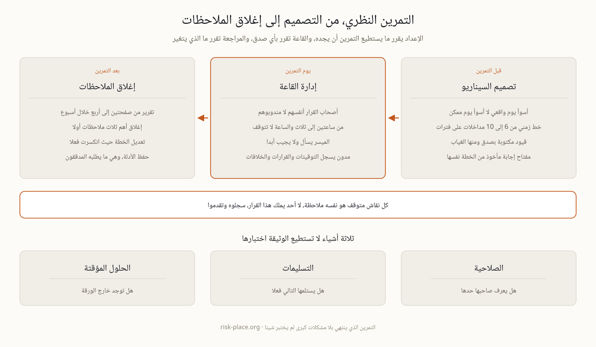

التمرين النظري، كيف تعدونه وتديرونه ليكشف فجوات حقيقية
التمرين النظري جلسة يمشي فيها صناع القرار الحقيقيون عبر سيناريو واقعي ساعة بساعة حول طاولة، دون لمس نظام واحد ودون تعريض الإنتاج لأي خطر. والتمرين الذي ينتهي بعبارة «سار كل شيء على ما يرام» لم ينجح، بل فشل في مهمته الوحيدة، وهي أن تنكسر الخطة أمامكم بينما انكسارها ما يزال مجانيا.
ما الذي يختبره التمرين ولا تختبره الوثيقة
تستطيع الوثيقة أن تثبت أن لديكم إجراء، لكنها لا تستطيع أن تثبت أن الإجراء يعمل بين أشخاص متعبين في وقت ضيق. وثلاثة أشياء لا تظهر إلا في القاعة. أولها الصلاحية، أي هل يعرف صاحب القرار حده الأعلى فعلا، وهل يجرؤ على استعماله دون انتظار من هو أعلى منه. وثانيها التسليمات، أي هل يستلم الشخص التالي ما سلم إليه أم تسقط المهمة في الفراغ بين إدارتين. وثالثها الحلول المؤقتة، أي هل الوضع اليدوي المكتوب في خطة الاستمرارية موجود خارج الورق ومعروف لمن سيشغله. ولهذا يبقى التمرين النظري أرخص أدوات الاستمرارية وأكثرها إنتاجا للملاحظات مقابل كل ساعة تستثمر فيه، فهو لا يحتاج إلا غرفة وميسرا وثلاث ساعات من وقت الأشخاص الصحيحين.
ويحسن أن يقال للحاضرين قبل البدء ما ليس هو. ليس تدريبا يشرح فيه أحد كيف تعمل الخطة، فالشرح يعني أن الخطة غير مفهومة أصلا وتلك ملاحظة تسجل لا مشكلة تعالج في القاعة. وليس تدقيقا يقيم فيه أداء الأشخاص، فالخوف من التقييم يجعل الجميع يجيبون بما هو مكتوب لا بما سيفعلونه فعلا. وليس عرضا لضيوف، لأن كل مقعد لغير صاحب دور يخفض صدق الغرفة درجة. والتمرين اختبار للنظام لا للأفراد، وهذه الجملة تقال في أول دقيقة وتصدق في كل ما بعدها.
تصميم السيناريو، أسوأ يوم واقعي لا أسوأ يوم ممكن
التمرين يقاس بسيناريوه، والسيناريو المبالغ فيه ينتج ضحكا لا ملاحظات. اختاروا أسوأ يوم واقعي لديكم، ولمعظم مؤسسات الخليج اليوم هو أحد اثنين، هجوم برمجية فدية بتشفير كامل، أو منشأة أغلقها حادث في المنطقة فبقيت سليمة لكن يتعذر الوصول إليها 72 ساعة. لكلا السيناريوهين سوابق إقليمية معلنة، فلا يحتاج أي منهما إلى اختراع.
خط زمني بمداخلات. من 6 إلى 10 تطورات تسلم على فترات، اكتشاف ثم تصعيد ثم اتصال إعلامي ثم سؤال من منظم ثم فشل مورد ثم انتكاسة في التعافي. المداخلة تفرض قرارا، والقرار يكشف فجوة.
قيود مكتوبة بصدق. الرئيس التنفيذي غير متاح في الساعة الأولى، ومسؤول النسخ الاحتياطية في إجازة، والمبنى بلا كهرباء. الواقعية تسكن في القيود لا في عدد الشرائح.
مفتاح إجابة مأخوذ من الخطة. لكل مداخلة اكتبوا سلفا ما الذي تقول الخطة إنه يجب أن يحدث. الفارق بين جواب الخطة وجواب القاعة هو قائمة ملاحظاتكم، وهو المخرج الحقيقي لليوم.
أرقام يمكن قياسها. أدرجوا في السيناريو نشاطا له هدف زمن تعاف معلن، لتقارنوا ما أعلنتموه بما استغرقته القاعة فعلا.

الإعداد يقرر ما يستطيع التمرين أن يجده، والقاعة تقرر بأي صدق، والمراجعة تقرر ما الذي سيتغير فعلا.
إدارة القاعة، الساعة لا تتوقف
الأدوار الحقيقية. يحضر من سيقرر يوم الحادث لا من هو أكثر تفرغا. أسئلة الصلاحية لا تظهر إلا بحضور من يملكها، والمندوب سيقول دائما إنه سيرجع إلى رئيسه، وهذا بالضبط ما تريدون تفاديه في اليوم الحقيقي.
من ساعتين إلى ثلاث ساعات. والساعة لا تتوقف. وكل نقاش يتوقف عنده الجميع دون قرار هو نفسه ملاحظة تسجل، وصياغتها بسيطة، لا أحد يملك هذا القرار، ثم تمضون.
الميسر يسأل ولا يجيب. ماذا تفعلون الآن، ومن يأذن بذلك، وأين هذا الرقم. في اللحظة التي يبدأ فيها الميسر بالمساعدة يتوقف الاختبار عن كونه اختبارا ويتحول إلى عرض تقديمي.
مدون يسجل كل شيء. التوقيتات والقرارات والخلافات والمعلومات التي طلبت ولم توجد. سجل المدون هو المادة الخام للتقرير، وبدونه ستتحول الجلسة بعد أسبوع إلى انطباعات متعارضة.
وهنا مفارقة تستحق أن تقال للقيادة قبل البدء. كلما ازداد انزعاج القاعة ازدادت قيمة التقرير. التمرين السلس يعني أن السيناريو كان سهلا أو أن الحاضرين كانوا يتدربون على الاتفاق لا على الاستجابة. ولذلك يفضل أن ييسر الجلسة شخص من خارج هيكل الاستجابة، مثل التدقيق الداخلي أو محترف استمرارية أو ميسر خارجي، فكاتب الخطة وهو يدافع عن خطته تضارب مصالح لا ميسر.
بعد التمرين، ملاحظات تغير الوثائق فعلا
التمرين الذي لا يتبعه تقرير هو يوم عمل ضائع لمجموعة من كبار المسؤولين. اكتبوا التقرير خلال أسبوع، من صفحتين إلى أربع صفحات، يضم السيناريو والتوقيتات مقابل أهداف التعافي المعلنة والملاحظات مرتبة بحسب العواقب لا بحسب سهولة الإصلاح، ولكل ملاحظة صاحب وتاريخ. ثم أغلقوا أهم ثلاث ملاحظات أولا، فاثنتا عشرة ملاحظة مفتوحة تشيخ حتى تصير ورق جدران، بينما ثلاث ملاحظات مغلقة تغير الخطة بالفعل. وكل ملاحظة إما تعدل وثيقة أو عقدا أو ترتيبا مع مورد، وإما تقبل رسميا كخطر توقعه القيادة باسمها، وليس هناك خيار ثالث اسمه سنعود إليها لاحقا. واحفظوا الأدلة كاملة، التقرير وكشف الحضور والإجراءات المغلقة، فهذا تحديدا ما يطلب رؤيته مدققو البند 9 من NCEMA 7000 والمادة 7 من إطار المصرف المركزي وISO 22301. وطبيعة المساءلة هنا واضحة، فالملاحظة المفتوحة بلا صاحب هي قرار بعدم الإصلاح اتخذ بالصمت.
أسئلة تتكرر على كل ميسر
كم مرة نتمرن. سنويا على الأقل وفق الحد التنظيمي الأدنى، إضافة إلى تمرين بعد أي تغيير جوهري، وجولة ثانية حين تنتج الجولة الأولى ملاحظات جدية. والبرامج الناضجة تناوب السيناريوهات سنة بعد سنة حتى لا تتحول الجلسة إلى طقس محفوظ.
تمرين نظري أم محاكاة كاملة. النظري أولا دائما، لأنه يجد فجوات القرار والصلاحية بتكلفة تكاد تكون معدومة. أما المحاكاة الكاملة، من تحويل فعلي إلى موقع بديل إلى إخلاء مبنى، فتأتي بعد أن يتوقف التمرين النظري عن إنتاج ملاحظات جديدة.
كيف نتمرن على سيناريو طائرة مسيرة دون إثارة قلق. أطروه كما هو تشغيليا، سيناريو تعذر وصول إلى منشأة وحريق محدود، إنتاج متوقف ومنطقة مغلقة ومؤمن وإعلام يطرحان الأسئلة. انضباط الاستجابة هنا مطابق لأي حادث في المنطقة، ولا حاجة إلى أي تأطير عسكري ولا فائدة منه.
من أين نأخذ أرقام السيناريو. من تحليل أثر الأعمال ومن سجل الحوادث لديكم، لا من تقارير عامة عن السوق. والمنهجية مشروحة في صفحة تحليل أثر الأعمال، ومنها تخرج الأنشطة التي تستحق أن تكون في قلب السيناريو.
تصميم التمارين وإدارة الحوادث وتحويل الملاحظات إلى تغيير موثق هي الوحدة M4 من برنامج ERGP، أول شهادة في حوكمة المرونة متاحة بالكامل باللغة العربية وبالإنجليزية أيضا. ست وحدات وستة مخرجات عملية وشهادة قابلة للتحقق.